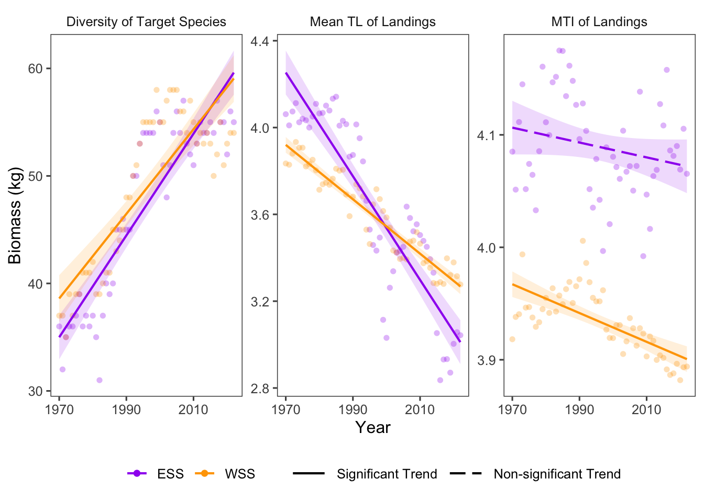

20 Distribtuion of Fishing Pressure
Data Type: Tabular Data (within eco_indicators)
Spatial Scope: Maritimes
Duration 1970-2022
Source: Bundy et al. 2017
20.1 Introduction to Indicator
The distribution of fishing pressure is characterized by three proximal indicators.
- Diversity of Target Species: the number of species targeted by commercial fisheries; proximal variable for fisheries effort.
- Mean Trophic Level of Fisheries Landings: the trophic position of harvested fish.
- Marine Trophic Index of Fisheries Landings: tropic average of landed fish, normally with a cutoff (here, 3.5) to capture change in fisheries effort in high-trophic-level species.
20.2 View Data
library(tidyr)
library(plotly)
library(stringr)
plotly_df <- data@data %>% inner_join(global_cols3)
# function to create plot with dropdown menu ------------------------------
make_distFP_dropdown_plot <- function(df,
year_col = "year",
region_col = "region",
value_suffix = "_value") {
# convert to long format
long <- df %>%
janitor::clean_names() %>%
pivot_longer(
cols = ends_with(value_suffix),
names_to = "metric",
values_to = "value"
) %>%
# remove suffix
mutate(
metric = str_remove(metric, "_value")
) %>%
# drop NAs (some regions don't have data for some variables or years)
tidyr::drop_na(value)
# find all metrics and regions
metrics <- sort(unique(long$metric))
regions <- unique(long[[region_col]])
# clean names for dropdown panels, helper
pretty_label <- function(x) str_replace(x, "diversity_target_spp_all","Diversity of Target Species") %>%
str_replace(.,"mean_tl_landings", "Mean TL of Landings") %>% str_replace(.,"mti_landings_3_25","MTI of Landings")
# build plot -----------------
p <- plot_ly()
# Add bar traces: metric1 has region1..K, metric2 has region1..K, ...
for (metric_i in seq_along(metrics)) {
m <- metrics[metric_i]
for (region_i in regions) {
dat <- long %>%
filter(metric == m, .data[[region_col]] == region_i) %>%
group_by(.data[[year_col]],color, linetype, linewidth, region_group, region_group_label) %>% # in case you have multiple rows per year
summarise(value = sum(value), .groups = "drop") %>%
arrange(.data[[year_col]])
group_name <- unique(dat$region_group)
color <- unique(dat$color)
linetype <- unique(dat$linetype)
width <- unique(dat$linewidth)
# If a region truly has no data for that metric, add an empty trace
# (keeps trace indexing stable)
if (nrow(dat) == 0) {
dat <- tibble::tibble(!!year_col := integer(0), value = numeric(0))
}
p <- p %>% add_lines(
data = dat,
x = ~.data[[year_col]],
y = ~value,
name = as.character(region_i),
legendgroup = group_name,
legendgrouptitle = list(
text =
ifelse(region_i == "4VN" & group_name == "ESS",
"Eastern Scotian Shelf Zones",
ifelse(region_i == "4X",
"Western Scotian Shelf Zones",
NA))),
showlegend = (metric_i == 1),
visible = (metric_i == 1),
line = list(color = color, dash = linetype),
hovertemplate = paste0("<b>", region_i,":</b> ","%{y:.3f}<extra></extra>") )
}
}
n_regions <- length(regions)
n_traces <- length(metrics) * n_regions
buttons <- lapply(seq_along(metrics), function(metric_i) {
vis <- rep(FALSE, n_traces)
shl <- rep(FALSE, n_traces)
idx_start <- (metric_i - 1) * n_regions + 1
idx_end <- metric_i * n_regions
vis[idx_start:idx_end] <- TRUE
shl[idx_start:idx_end] <- TRUE
list(
method = "update",
args = list(
list(visible = vis, showlegend = shl),
list(
title = pretty_label(metrics[metric_i]),
yaxis = list(title = "Community Condition")
)
),
label = pretty_label(metrics[metric_i])
)
})
p %>%
layout(
barmode = "stack",
hovermode = "x unified",
title = pretty_label(metrics[1]),
xaxis = list(title = str_to_title(year_col)), # keep one bar per year
yaxis = list(title = "Community Condition", fixedrange = TRUE),
legend = list(
title = list(text = str_to_title(region_col)),
x = 1.02, xanchor = "left",
y = 1, yanchor = "top",
groupclick = "toggleitem"
),
updatemenus = list(list(
type = "dropdown",
x = -.1, xanchor = "left",
y = 1.15, yanchor = "top",
buttons = buttons
)),
margin = list(r = 180, t = 80)
)
}
# usage:
p <- make_distFP_dropdown_plot(plotly_df)
p <- p %>% config(displayModeBar= F)
p Figure 20.1: Biomass of Trophic Levels in Scotian Shelf regions; 1970-2022. Use dropdown box to select a target trophic level, and click legend to isolate regions.
20.3 Trends
Although trends between NAFO zones over time 20.1), overall trends in the Eastern and Western Scotian Shelf regions were mostly consistent (Fig. 20.2).
In both regions: * Diversity of Target Species increased * Mean Trophic Level of Landings significantly decreased * Marine Trophic Index of Landings decreased, but with a non-significant trend for ESS.
The increase in diversity of target species indicates a growing distribtion of fishing pressure throughout the marine community. Decreases in Mean TL and MTI of landings indicate that harvest activities have shifted away from high trophic level species, although this could be due to previous overharvesting of species at high trophic levels.

Figure 20.2: Overall Biomass trends for Trophic Levels overtime.
20.3.1 Summary Table by Region and Functional Group
Trends in distribution of fishing pressure variables for each NAFO region within the Eastern and Western Scotian Shelf (1970-2022) are shown in the table below (Table 20.1).
| Variable | Eastern Scotian Shelf Trends | Western Scotian Shelf Trends |
|---|---|---|
| Diversity of Target Species |
4VN: 5.49e-02 4VS: 1.82e-01 ∗ 4W: 4.87e-01 ∗ |
4X: 3.93e-01 ∗ |
| MTI of Landings |
4VN: -1.21e-04 4VS: -9.64e-04 4W: -2.16e-04 |
4X: -1.28e-03 ∗ |
| Mean TL of Landings |
4VN: -2.22e-02 ∗ 4VS: -3.57e-02 ∗ 4W: -1.31e-02 ∗ |
4X: -1.25e-02 ∗ |
20.5 Variable Definitions
| variable | description | unit |
|---|---|---|
| year | Year of data collection | |
| region | Region over which data are summarized | |
| DiversityTargetSpp_ALL_value | Number of species targeted by commercial fishing | Number of Speicies |
| MeanTL.Landings_value | Mean Trophic Level of landings | Trophic Level |
| MTI.Landings_3.25_value | Marine Trophic Index of landings | Trophic Level |